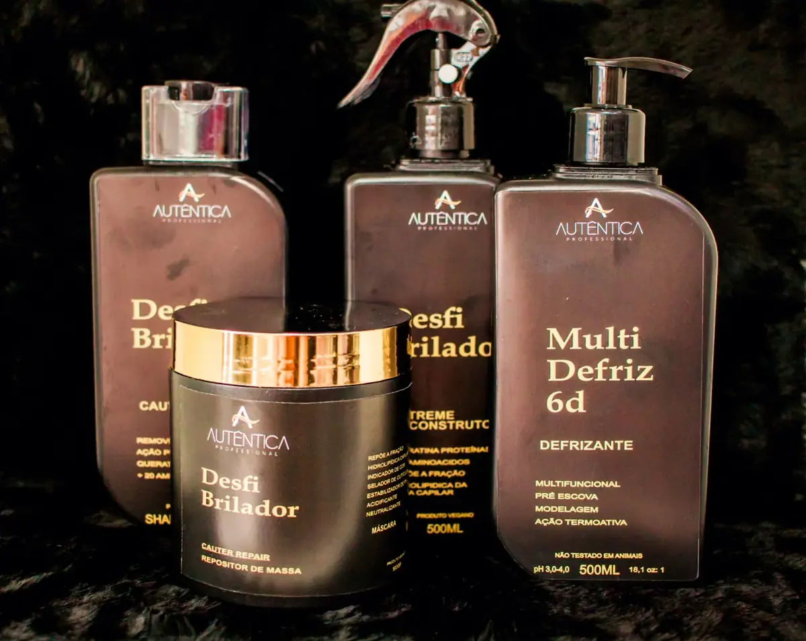

Sou profissional
Protocolos, performance e um portfólio pensado para ampliar as possibilidades no salão.
Conhecer o portfólio profissionalCosméticos capilares para salão, revenda e cuidado em casa
Acompanhe no InstagramBeleza profissional com identidade
Soluções capilares que conectam diagnóstico, técnica e manutenção para entregar fios mais bonitos, tratados e autênticos em cada etapa.


Uma marca, diferentes jornadas
Protocolos, performance e um portfólio pensado para ampliar as possibilidades no salão.
Conhecer o portfólio profissionalLinhas reconhecíveis, argumentos claros e soluções para diferentes necessidades capilares.
Falar com o comercialEncontre produtos para manter o resultado do salão e construir uma rotina de cuidado.
Explorar cuidadosSoluções por necessidade
Em vez de começar pelo produto, começamos pela necessidade. Explore o portfólio pelo resultado que você procura.
Redução de volume, controle de frizz e acabamento polido.
Hidratação, nutrição, reconstrução e cuidado pós-química.
Clareamento, matização e manutenção de tons frios.
Limpeza do couro cabeludo, força, crescimento e definição.
Brilho, perfume, proteção térmica e controle de frizz.
Rendimento e cuidado para a rotina profissional.
Destaques Autêntica

Para quem transforma todos os dias
Um bom resultado começa antes da aplicação. A Autêntica organiza soluções para ajudar o profissional a diagnosticar, construir protocolos e orientar a manutenção.
Entender histórico, estrutura, couro cabeludo e objetivo.
Escolher a combinação coerente com a necessidade real do fio.
Prolongar o resultado com uma rotina simples e bem orientada.
Nossa visão
Cada fio carrega uma história, uma rotina e uma necessidade diferente. Por isso, nosso portfólio percorre da transformação intensa ao cuidado cotidiano.
Autêntica é sobre unir conhecimento profissional e beleza possível: produtos claros em sua proposta, protocolos coerentes e resultados que respeitam a identidade de cada pessoa.
Conhecimento que cuida
Guias diretos para transformar dúvida em uma rotina capilar mais consciente.
Entenda hidratação, nutrição e reconstrução sem complicação.
Ler guia ↗ CuidadosOs sinais de dano e as etapas que ajudam na recuperação da fibra.
Ler guia ↗ DiagnósticoUm roteiro prático para identificar a necessidade principal dos fios.
Ler guia ↗Perguntas frequentes
Não encontrou o que procurava? Fale com a equipe pelo formulário comercial.
A escolha começa pelo diagnóstico da fibra e do couro cabeludo. Identifique se a necessidade principal é hidratação, nutrição, reconstrução, controle de frizz, manutenção da cor, definição ou cuidado do couro cabeludo. Em procedimentos químicos, procure orientação profissional.
Não. O portfólio reúne produtos de uso profissional e linhas de manutenção para uso em casa. Consulte a indicação de cada produto antes da aplicação.
Hidratação ajuda a repor água e maciez; nutrição ajuda a repor lipídios, brilho e flexibilidade; reconstrução ajuda a repor massa e resistência. O cronograma ideal combina as etapas conforme o diagnóstico.
Envie seus dados pelo formulário comercial. A equipe poderá orientar sobre catálogo, disponibilidade e atendimento para sua região.
Produtos de uso exclusivamente profissional exigem conhecimento técnico e devem ser aplicados por um profissional habilitado. Para manutenção em casa, escolha itens indicados para esse perfil.
Vamos conversar
Conte um pouco sobre seu perfil. Profissional, salão, distribuidor ou revendedor: a equipe comercial entra em contato para orientar o próximo passo.
@autenticaprofessional ↗